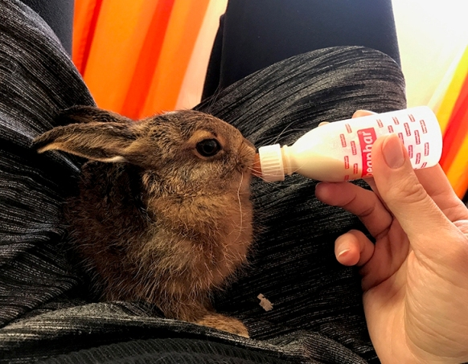
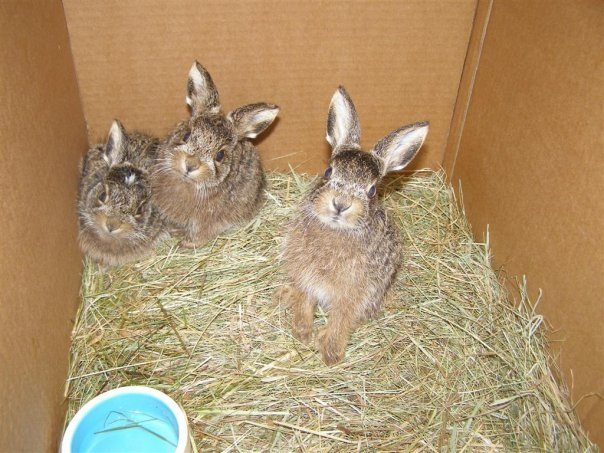

Kako othraniti bebu divljeg zeca?
Nađen je divlji zec. Što da učinim?
Prvo i osnovno pravilo je NE DIRAJTE GA. Zečevi rađaju svoje mlade na otvorenom, bez izgrađenog gnijezda, pa ljudi često pomisle da su ostavljeni. Nemojte ih dirati! Majka ih posjećuje 1-2 puta dnevno na svega nekoliko minuta, kako bi ih nahranila.
Ako ste zečića već dirali vi ili vaš pas/mačka, ne vraćajte ga, jer ste na njemu ostavili svoj miris. Majka ga više neće prepoznati i neće ga hraniti! Sada je na vama da ga othranite na zamjenskom mlijeku i vratite u prirodu, služeći se informacijama na ovoj stranici. Informacije su opširne, ali bitne!
Veće su šanse da vi nešto prenesete zeki, nego zeko vama. Ipak, redovito perite ruke, posebno vašim najmlađima. Osnovna higijena je dovoljna da nema bojazni. Ne dovodite zeku u kontakt s drugim životinjama, a posebno ne s mačkama i psima!
Othranjivanje spašenog divljeg zeca nije nimalo lako, čak i za ljude s iskustvom. Iziskuje puno vremena, ali i novaca. Ako prijavite zečića u našu Udrugu, pokušat ćemo vam u tome pomoći.
- hranite bebu divljeg zeca zamjenskim mlijekom za MAČIĆE, a NE kravljim ili kozjim mlijekom!
- obavezno koristite prObiotik! (pro-Life, Linex ili Ferzym)
- izlječite zeca sirupom protiv kokcidija! (Biseptol, Sulotrim ili Bactrim)
- divlja životinja nije kućni ljubimac - kada poraste, zečića treba prilagoditi za povratak u prirodu!
Statistika dovoljno govori: čak 38 % beba divljih zečeva NIJE PREŽIVJELO ni prvih mjesec dana, jer se nalaznici nisu pridržavali savjeta s ovih stranica ili nisu znali da metoda pravilne prehrane beba divljih zečeva postoji.
Što se dogodi ako se ne pridržavate savjeta s ovih stranica
Fotografija: mladunče divljeg zeca koje je teško oboljelo, jer su ga nalaznici othranjivali s pogrešnim mlijekom. Ovakvih primjera je nažalost bilo previše. Molimo Vas da se pridržavate naših tekstova o pravilnoj prehrani i spriječite ovakav ishod.
Na neadekvatnoj prehrani zec možda i preživi neko vrijeme, ali je daleko podložniji bolestima, samo-lomu kostiju i drugim komplikacijama. To će ga možda zadesiti kada odraste i bude u divljini, a mi mu više nećemo moći pomoći. Može se dogoditi pred očima vas ili vaše djece, a to nije nimalo lijepo za vidjeti. Neka vam prioritet bude ne bilo kako, nego pravilno othraniti zeca i pripremiti ga za dug i kvalitetan život.
Kako odrediti starost bebe zeca?
Zec je po rođenju težak 80-120 grama. U dobi od 2 tjedna težak je oko 400 grama. Ovo su okvirne informacije i težina s obzirom na dob može varirati. Zečića IZVAŽITE i pogledajte tablicu niže, kako bi procijenili njegovu dob i odredili količinu mlijeka koju treba dobivati.
Ako ste našli zeca težeg od 800 grama, preporučujemo da ga odmah vratite na isto mjesto, jer je već othranjen od majke i sigurno zna jesti zeleno. Nepotrebnim zadržavanjem teže će se prilagoditi u prirodi.
Bebe divljeg zeca prije određene dobi neće jesti mrkvu, travu, sjemenke i slično. Iako se rađaju sa zubima, krznom i odmah vide, u najmanjoj dobi su potpuno ovisni o majčinom mlijeku. Ako ste zečića dirali, morati ćete ga Vi othraniti posebnim zamjenskim mlijekom, kako ne bi uginuo od gladi.
NIKADA NE UPOTREBLJAVAJTE KRAVLJE MLIJEKO ILI DJEČJE KAŠICE ili neke druge pripravke za ljudske bebe! Koristite isključivo zamjensko mlijeko u prahu za mačiće! Ono je po sastavu najsličnije zečjem mlijeku i ima najmanje laktoze, koju zečići ne podnose. Ako ga ne možete nabaviti u roku od jednog dana, postupite prema uputama na ovoj stranici.
Ako ste bebu do sada hranili kravljim mlijekom, kontaktirajte nas pa ćemo odrediti način prehrane koji će zecu pomoći da bude jači i zdraviji kada odraste.
Hranite bebe u svom krilu dok su mlade, a kasnije na podu bez da ih dirate. Što su veći teže ćete ih hraniti, jer su vrlo nemirni i često u sekundi počnu trčkarati. Kako ne bi iskočili kada ih se primi u ruke, dobro je napraviti "prsten" s kažiprstom i palcem oko njihovog vrata, tako da se jagodice samo dodiruju, a ima bar 1 cm prostora od zekonje do prstiju. Kod zečića starih tek nekoliko dana to jako olakšava hranjenje.
Zečiće nikada nemojte hvatati ili držati za uši! Dok su manji, možete im cijelo tijelo obuhvatiti rukama i podići ih. Kada su veći, možete ih uhvatiti za kožu na leđima (odmah iza vrata - pritom obuhvatite što više kože). Zečiće teže od 300 grama ne dižite više od 20 cm iznad tla!
Prehrana zeca težine do 200 grama
5 puta dnevno, svaka 4 sata (za male bebe od 80 grama poželjno je i 6 puta dnevno).
Nakon zadnjeg obroka u npr. 22 h navečer, napraviti pauzu do 6 ujutro. Ako ne možete tako hraniti zečića, rasporedite mu više obroka dnevno onako kako je vama izvedivo.
Zamjensko mlijeko za mačiće (ili štence) ne davati na silu! Može ući u pluća pa se beba uguši ili dobije upalu pluća. Ipak, postoji način kako pravilno prisilno hraniti bebu ako potpuno odbija mlijeko. Vrlo je važno da beba dobije hranu!
Ne brinite ako ne jede unutar 24 sata od trenutka pronalaska, ali u roku od 36 sati MORA početi jesti.
S druge strane, NIKAKO nemojte dopustiti da beba jede koliko hoće! Moguća je smrt od prejedanja, jer ne može probaviti velike količine hrane. Zato pažljivo dozirajte količinu mlijeka, kako piše u tablici niže.
Mliječni obrok:
Jednu poravnatu žličicu zamjenskog mlijeka za mačiće u prahu pomiješajte s dvije žličice vruće vode. Tako ćete dobiti oko 10 ml mliječnog obroka. Kada se mlijeko malo ohladi, umiješajte probiotik (Linex, Prolife ili Ferzym). Sadržaj jedne kapsule podijelite na 5 dnevnih obroka.
Obrok se mora svježe pripremiti prije svakog hranjenja! U slučaju nadutosti umjesto vode upotrijebite čaj od kamilice ili komorača. Beba zeca u početku pije malo mlijeka, otprilike 3-5 ml po hranjenju. Količina se ne može točno propisati. Najmanje bebe (težine 80 grama) pojedu 1-2 ml 6 puta dnevno.
Kod teško bolesnih beba (nadutost…) upotrijebite zamjensko mlijeko za štence u istom omjeru: jedna žličica mliječnog praha i dvije žličice vode. Ono ima manje masnoće i bjelančevina pa je lakše probavljivo.
 |
 |
Lijek:
Biseptol sirup: dati zeki u usta 2x dnevno kroz 7 dana. Doza je 0.1 ml na svakih 100 grama težine. Npr. ako zeko ima oko 200 grama, daje se 0.2 ml dva puta dnevno poslije mliječnog obroka (otprilike svakih 12 sati). Lijek obavezno davati 7 dana, čak i ako se beba čini zdrava! Služi protiv kokcidija, koje divlji zečevi redovito imaju, te preventivno protiv bakterijskih oboljenja.
Biseptol se izdaje samo na recept, možete ga zatražiti od veterinara. Ako ispunite ovaj obrazac, udruga će vam sirup poslati poštom, ako je u mogućnosti.
Drugi lijek je Immunoboost. To je pasta namijenjena mladuncima koji su prerano odvojeni od majke i nisu dobili majčin
kolostrum, pa imaju smanjen imunitet. Služi i za pothranjene životinje. Daje se po 1-1.5 ml nekoliko puta.
Prvi put dajte odmah čim kupite pastu, drugi put nakon 5 sati, treći put nakon 24 sata i četvrti put nakon 36 sati.
Npr: 1. ponedjeljak u 15 h, 2. ponedjeljak u 20 h, 3. utorak u 20 h, 4. četvrtak u 8 h.
Immunoboost je obvezan za bebe od 80 do cca 120 grama, jer su te bebe odvojene s tek dan-dva starosti i bez njega gotovo sigurno neće preživjeti! Možete ga nabaviti u većim pet shopovima ili kod veterinara.
Masaža trbuščića nakon jela
Ako imate vremena, dobro je nakon jela 10-ak minuta masirati bebi trbuščić, kako bi dobro probavila hranu i ne bi došlo do nadutosti. Posebno je važna masaža trbuščića kod beba manjih od 150 grama. Imajte na umu da masiranje tako male bebe zapravo znači maženje. Najbolje je leći na pod i staviti zečića na svoj trbuh, tako da je njegova glava okrenuta prema nama. Maziti ga odozgo prema dolje, u smjeru stražnjih nogu i guze. S vremenom ćete osjetiti i crijeva - pod vašim prstima bit će poput zrnaca pijeska.
Dođe li do komplikacija, masiranje (uz pravilno liječenje) je od životne važnosti!
Promatrajte i kakicu (kuglice) koje zeko napravi tijekom dana i noći. U prvom tjednu to će biti do 5 malih kuglica dnevno, promjera 1-2 mm. Pri uvođenju zelene hrane (trava, bilje i ostalo) kuglice bi mogle biti mekše. Važno je da zeko nema proljev, jer od toga može dehidrirati i uginuti. Zato su Biseptol i probiotik tako važni.
Pranje zeke ispod vrata
Često dobivamo upit da se dlaka ispod zekinog vrata stvrdnula od mlijeka koje mu je curilo niz bradu. To je uobičajeno i ne morate se pretjerano zamarati time. Taj stvrdnuti dio od mlijeka možete ukloniti tako da umočite krpicu u jako toplu (ne prevruću!) vodu, namočite područje ispod zekina vrata i pustite da malo odstoji. Nakon 5-10 minuta skoreno mlijeko će se omekšati i moći će se lakše obrisati. Ako želite, zečića možete brisati mokrom krpicom nakon svakog hranjenja. Možda će zečiću zbog toga opasti dlaka ispod vrata, ali budite bez brige - brzo će narasti nova. Bitno je da se uklone suhe grude mlijeka ispod vrata da ne bi bile prevelike, jer bi to u ekstremnim slučajevima moglo zečiću otežati disanje.
Pročitajte i česta pitanja o othranjivanju zečića.
Prehrana zeca težine od 250 g na više
Kada zec dosegne oko 250 g težine, treba promijeniti prehranu na sljedeći način: 4 puta dnevno, svakih 6 sati. Ako ne možete tako hraniti zečića, rasporedite mu više obroka dnevno onako kako je vama izvedivo.
Mliječni obrok:
Jednu poravnatu žlicu zamjenskog mlijeka za mačiće pomiješajte s dvije žlice vruće vode. Tako ćete dobiti oko 20 ml mliječnog obroka. Kada se mlijeko malo ohladi, umiješajte probiotik (Linex, Prolife ili Ferzym). Sadržaj jedne kapsule podijelite na 4 dnevna obroka. Količina koju će zeko popiti ne može se točno propisati, ali za okvirne doze pogledajte tablicu niže. Kod teško bolesnih beba zečeva upotrijebite zamjensko mlijeko za štence u istom omjeru.
Od nekih 300 grama težine, pored mliječnih obroka zeko počinje uzimati i drugu hranu - pogledajte poglavlje ostala hrana niže. Treba imati na raspolaganju i jednu posudicu sa svježom vodom (ne pojilicu!).
Zeko mora jesti zamjensko mlijeko za mačiće (štence) dok ne dosegne oko 1 kg težine. Kada prijeđe 800 grama, količinu mliječnog obroka treba postepeno smanjivati prema 20 ml dnevno, sve dok ne dođe vrijeme za prilagodbu za povratak u prirodu (sa nekih 1200 grama).
Kada zečića težeg od 300 grama puštate da slobodno šeće kupaonicom ili nekom drugom prostorijom, svakako maknite rešetke kaveza! Zeko često skoči na njih, noga mu zapne između rešetki i u sveopćoj panici pukne! Isto tako, NIKAD nemojte dizati bebu na visinu iznad 20 cm. To se odnosi i na hranjenje na trosjedu, stolu, u krilu itd. Skokom sa visine veće od 20 cm mladi zečevi lako slome svoje krhke kosti. Iz istog razloga, maknite svo pokućstvo na koje mogu skočiti, jer skakanjem sa stolice ili niskog ormarića na tvrdi pod znaju slomiti i 2-3 noge, a tada im više nema spasa. Bilo je mnogo takvih ozljeda u stanu nalaznika. Ako nemate hodnik ili prostoriju bez pokućstva, zečića radije držite u kavezu (poželjne dimenzije su 100 x 50 x 60 cm ili više). U svakom slučaju, budite JAKO oprezni!
Dodatni kalcij za jačanje kostiju
Rahitis, te pomankanje kalcija i vitamina D kod othranjenih zečeva javlja se između 2. i 7. tjedna starosti, kada jako brzo rastu (doslovno udeseterostruče svoju težinu u nekoliko tjedana!). Tada su najčešći lomovi kostiju.
Suplement kalcija, koji se mora davati zečiću težem od 350 grama (ne ranije!), je WELPENKALK prah i tablete ili CANILETTEN tablete - mineralni dodatak hrani za odrasle pse. U toj dobi dovoljno mu je jednom dnevno, između 2 hranjenja, dati 0.5 grama praha pomiješanog s vodom (ako je suplement u obliku tablete, izmrvite ju u prah).
WELPENKALK prah i tablete: zeki od 500 g težine dati jednom dnevno petinu male poravnate žličice praha (tj. količinu koja bi stala u praznu kapsulu probiotika) ili manji dio jako usitnjene tabletice. Prah pomiješajte s 3-4 ml vode, uvucite u špricu, dobro promućkajte i dajte zeki u usta.
Treba ga dati između dva mliječna obroka, jer proteini iz mlijeka otežavaju apsorpciju kalcija. Ipak, ako zečić uporno odbija popiti suplement s vodom, možete ga umiješati u mlijeko (ali samo jednom dnevno, ne u svaki mliječni obrok). Bolje je da kalcij dobije tako, nego nikako.
 |
 |
Ako ispunite ovaj obrazac, udruga će vam suplement poslati poštom, ako je u mogućnosti. Nastojimo pomoći zečićima da ojačaju krhke noge i budu manje podložni fatalnim lomovima kostiju.
Paketić lijekova sadrži: Biseptol sirup, AD3E vitamin, suplement kalcija i detaljne upute za doziranje. Ovi lijekovi se daju u točno određenim količinama i razmacima, uz velik oprez!
Napominjemo da ova terapija jačanja kostiju neće dobro djelovati ako se u zeki ne razvije vitamin D, za što su mu potrebne sunčeve UV zrake (koje ne prolaze kroz prozorsko staklo!).
 |
Dodatni vitamin D
Vitamin D je važan za apsorpciju kalcija i stvaranje kostiju, te neophodan za njihovo zdravlje i čvrstoću. Vitamin D3 nastaje u koži nakon izlaganja sunčevim zrakama (UVB). Stoga je važno da zečića izložite sunčevim zrakama na sljedeći način: otvorite prozore dok je zečić u kavezu (ne pušten!). Ne stavljajte ga direktno na sunce, da ne dođe do toplinskog udara. Dovoljne su UV zrake koje se odbijaju od pokućstva i zidova ili se probijaju kroz oblake.
Dobre UV zrake ne prolaze kroz staklo, pa u prostoriji u kojoj držite zečića u kavezu prozori trebaju biti otvoreni kad god je to moguće. Naravno, lagano direktno sunce ujutro ili predvečer mu neće škoditi, ali nikako ne smije ostati na suncu tijekom dana, jer bi uginuo od topline. Stoga budite jako oprezni!
Zec ne smije dobiti vitamine injekcijom pod kožu! Vitamini koji su sadržani u zamjenskom mlijeku i probiotiku su sasvim dovoljni!
Tablica za okvirno određivanje starosti i količine mlijeka
| Starost (dani): | Težina bebe (grami): | Količina po svakom obroku u mililitrima (okvirno): | Broj obroka dnevno: | Ukupno ml tijekom cijelog dana (okvirno): | Ostala hrana: | Preventivni lijekovi (davati i zdravoj bebi): |
| 1 dan | 80 g | 1 - 2 ml po obroku | 5 x dnevno | 6 ml ukupno | ne | prObiotik, Biseptol sirup + Immunoboost! |
| 3 dana | 100 g | 2 - 3 ml | 4 | 10 ml | ne | prObiotik, Biseptol sirup + Immunoboost! |
| 5 dana | 120 g | 4 - 5 ml | 4 | 16 ml | ne | prObiotik, Biseptol sirup + Immunoboost! |
| 7 dana | 200 g | 8 - 10 ml | 4 | 32 ml | ne | prObiotik, Biseptol sirup |
| 10 dana | 250 g | 12 ml | 4 | 48 ml | ne | prObiotik, Biseptol sirup |
| 12 dana | 350 g | 15 ml | 4 | 60 ml | da, početi davati | prObiotik, Biseptol sirup |
| 16 dana | 400 g | 20 ml | 3 | 60 ml | da | prObiotik, Biseptol sirup |
| 20 dana | 500 g | 25 - 30 ml | 3 | 75 ml | da | ništa, ako je zdrav |
| 24 dana | 600 g | 30 ml | 3 | 90 ml | da | ništa, ako je zdrav |
| 28 dana | 700 g | 35 ml | 3 | 105 ml | da | ništa, ako je zdrav |
| 35 dana | 800 g | 40 ml | 2 | 80 ml | da | ništa, ako je zdrav |
| 45 dana | 1000 g | 40 ml | 2 | 80 ml | da | ništa, ako je zdrav |
| 70 dana | 1200 g | 0 ml | 0 | 0 ml | da | ništa, ako je zdrav |
* Tablica sadrži okvirne podatke, nastale iz našeg vlastitog iskustva s mladuncima divljih zečeva, ali brojke mogu varirati, ovisno o slučaju. Zadnja izmjena tablice: 3. svibnja 2012.
Ovdje možete preuzeti tablicu u PDF-u.
Ako se pitate zašto bebe treba hraniti i do 5 puta dnevno, a u prirodi ih majka hrani 1 ili 2 puta, to je zato što mlijeko takve kvalitete, kao što je mlijeko majke zečice, još nitko nije uspio napraviti. Gornja uputstva o količini i redovitosti hranjenja nastala su na osnovi dugogodišnje prakse.
Divlji zec i ostala hrana
Od nekih 300 grama težine, pored mliječnih obroka zeko počinje uzimati i drugu hranu: razne trave (pogledajte fotografiju niže), začinsko bilje, mrkvu i peršin (korijen i list), radič, prokulice, zeleni kupus, brokulu, lišće korabe, svježi krastavac, grančice drveća i grmova, oguljenu zob, krupne zobene pahuljice, sjemenke sezama i lana, očišćene sjemenke suncokreta... Takvu hranu prirediti zeki navečer, jer jedu uglavnom noću. Naravno, smije ju imati na raspolaganju i preko dana. Povrće treba biti dobro oprano i posušeno. U ničemu ne pretjerivati, bitna je raznolikost.
Započeti s travom, posebno peršinom i listovima maslačka, jer sadrže njima važan kalcij. Hranu koja napuhuje (kupus, lucerna/djetelina, lišće korabe) kasnije uvesti u prehranu. Od voća su dobrodošle jabuke, breskve, marelice, jagode i sl, tj. sve što zec može naći u prirodi u realnim količinama. Iz tog razloga suho voće i banane nisu preporučljive. Sjemenke kukuruza i zobi su izvor ugljikohidrata, a sjemenke suncokreta i lana izvor masnoća, pa je važno sve njih redovito posluživati kada za to dođe vrijeme. Kućno ukrasno bilje im NIKAKO ne smije biti dostupno, jer je za njih najčešće otrovno.
Zdravom divljem zecu mora biti posluženo:
| zamjensko mlijeko za mačiće s prObiotikom | svaki dan, sve do prilagođavanja za povratak u prirodu (količine pred kraj smanjivati) |
| voda u maloj zdjelici (ne u pojilici!) | od prvog dana života |
| sijeno | od prvog dana života |
| grančice voćaka | od prvog dana života |
| Biseptol sirup protiv kokcidija | prvih tjedan dana života kod hranitelja (starost nebitna) |
| Sunčeva svjetlost | od prvog dana života, po uputama (vidi podnaslov Dodatni vitamin D) |
| suplement kalcija | od 350 grama težine na dalje, po uputama |
| zelena hrana (biljke) | postepeno, kada dosegne oko 300 grama težine |
| voće, u manjim količinama | 1-2 dana nakon pozitivne reakcije na zeleno |
| sjemenke (kukuruz, zob, lan, suncokret...) | nakon pozitivne reakcije na zeleno i voće, može dobiti u srednjim količinama |
Voda mora biti poslužena u zdjelici, jer će se zec nakon puštanja susretati s potocima i iz njih piti.
Sijeno se može nalaziti kao podloga od prvog dana i zec će ga vrlo rano početi grickati. No, kasnije je takvu podlogu potrebno često mijenjati pa je bolje staviti piljevinu.
NE otapati suhu hranu za kuniće u vodi i davati bebi zecu!
NE davati kravlje ili kozje mlijeko - ako zec preživi, samo je imao sreće... No, i dalje će tijekom života zbog krive prehrane postojati velika šansa da dođe do loma kostiju, čak i pri jednostavnom skoku.
NE davati kašice za ljudske bebe!
NE davati vitamine!
Što dati bebi divljem zecu kada počne jesti zeleno?
Divljem zecu poslužite više trave koja sadrži kalcij, npr. mnogo maslačka (radiča) i peršina. Ne brinite zbog unosa mnogo kalcija, divlji zec će te količine uzimati samo kratko dok raste i razvija se, tih nekoliko tjedana dok je kod vas. U prirodi će uzimati raznolikiju hranu nego što mu mi možemo poslužiti.
Ne berite travu u gradovima! Drugi kućni ljubimci ondje obavljaju nuždu i na zeca mogu prenijeti neke bolesti.
Fotografija prikazuje neke od livadnih trava koje možete ponuditi divljem zecu:
- Djetelina se vrlo rano daje divljim zečevima, ALI pazite na količinu, jer može dovesti do nadimanja. Bolje davati manje količine, i to samo sitne djeteline. Nikako se ne preporučuje stočna djetelina.
- Lišće divlje, nešpricane jagode
- Slak je penjačica koja cvjeta lijepim nježnim bijelim cvjetovima. Penje se po raznim travama i nije ga potrebno skidati s njih.
- Matičnjak (mellisa) je ljekovita medonosna trava i ima miris po limunu.
- Razne trave poput ljuljeva, vlasulja, vlasnjača i sl. najčešće se mogu naći na livadama.
- Bagrem (agacija, akacija) je stablo koje nalazimo i u gradovima, a cvate u svibnju. Zečevi vole cvijet i mlado lišće, ali ni od starijeg ne zaziru. Dobar je izbor za zeca ako ga othranjujete u gradu i ne možete doći do svježe čiste trave.
- Trputac - na slici uskolisni, ali zečevi vole i širokolisni trputac.
- Preslica
- Maslačak (regvet) raste na livadama i na sjenovitijim mjestima. Zečevi ga vole, a ima i puno kalcija.
- Postoji i trava vrlo slična maslačku, ali je pikavih vrhova listova - obični kostriš. To zečevima ne smeta i rado ga jedu.
- Divlja mrkva - samo pazite da ne uberete neku drugu biljku sličnog izgleda! Divlja mrkva ima bijeli štitasti cvat, a od drugih se štitarki razlikuje po jednom crno-ljubičastom cvijetu u sredini cvata.
- Ljepljiva broćika
U prehrani divljeg zeca jako je važna raznolikost, jer će se nakon puštanja u prirodu susretati s raznim biljkama, koje mu možda nismo uspjeli dobaviti.
Pročitajte i česta pitanja o othranjivanju zečića.
Zapamtite što vam Udruga savjetuje iz iskustva i imajte na umu da veterinar bilo kojim drugim savjetom može nesvjesno naštetiti zečiću. Nažalost, većina veterinara u RH i šire tvrdit će da bebu zeca nije moguće othraniti ili će općenito davati pogrešne savjete, kao npr. da ga treba hraniti razrijeđenim kozjim mlijekom.
Dobrog veterinara prepoznat ćete i po tome što će priznati ako nema iskustva s divljim zečevima i posavjetovati se s kolegama koji imaju iskustva. Tek tada će primijeniti određeni način liječenja ili davati savjete o othranjivanju mladunčadi bez majke. Ne mora svaki veterinar znati sve o svim (zaista mnogobrojnim) životinjama, ali htjet će naučiti.
Fotografije divljih zečeva na othranjivanju
Album slika o prehrani beba divljeg zeca možete pogledati i na Facebooku: ALBUM 1 ALBUM 2
Pogledajte i video zapise o othranjivanju divljih zečeva
Sljedeće fotografije prikazuju razvoj beba divljeg zeca.
Beba divljeg zeca, stara tek nekoliko dana
|  |
Beba zeca od desetak dana
Beba zeca s manje od 3 tjedna starosti
Usporedba bebe starosti 10-tak dana i bebe stare 4.5 tjedna
Oprez! Upravo zbog njihovog JAKO BRZOG rasta (vidljivo na slici iznad) PAZITE na sve savjete u vezi lomova kostiju, te kako ih pokušati spriječiti pravilnom prehranom i suplementima.
Možete nam i vi poslati svoje fotografije, putem ovog obrasca. :)
Kada treba veći prostor?
Zečevi se u prirodi skrivaju u visokoj travi. U vašoj kući treba im kartonska kutija, kućica za kunića ili neko slično skrovište, gdje će se osjećati sigurno i moći pobjeći ako se uplaši. Većeg zeku nikad ne zatvarajte u premali kavez!
Kada zeko počne jesti zeleno potreban mu je veći prostor za kretanje. Prostor je zaista neophodan, kako bi mu se pravilno razvili mišići, kosti i probava. S obzirom da je zec aktivan predvečer i noću, u to doba treba imati dovoljno prostora za trčanje i to po površini na kojoj se neće klizati. Može poslužiti hodnik ili bilo koja prazna prostorija, ali i kupaonica. No, ako radite s perilicom rublja ili ispuštate vodu, maknite zeca iz prostorije jer se ne smije naviknuti na te zvukove, a može se i jako uplašiti, što je opasno.
Obavezno osigurajte balkone i prozore - zec može visoko skočiti! Bilo je mnogo slučajeva da je zeko star oko mjesec dana skočio preko balkona ili prozora.
Maknite rešetke kaveza, kako ne bi skočio na njih! Ako mu noga zapne između rešetki, mogao bi se uspaničiti i slomiti ju pri pokušaju da se oslobodi. To je nažalost česta ozljeda pri othranjivanju zečića. Sklonite sve što bi ga moglo ozlijediti, pogotovo električne kabele. Divlji zec grize žice od telefona, struje (oprez!), sve drvene površine i uglove zidova…
Maknite sve kućne biljke, jer su mnoge za njih otrovne (ako pojede nešto sumnjivo, odmah mu dajte usitnjeni aktivni ugljen otopljen u malo vode!).
Zečića držite podalje od pasa i mačaka, jer su mu to prirodni neprijatelji. Zečevi imaju strah od njih, iako to možda nećete odmah primjetiti.
Zec može početi divljati u zatvorenom prostoru ako se naglo pojavite. Obavezno se udaljite da se smiri! Ako ste u blizini, ODMAH čučnite!
Kad malo poraste, trebat će mu veći ograđeni prostor na otvorenom, gdje će se pripremati za povratak u prirodu. Ako nemate takav prostor na raspolaganju, kontaktirajte nas! Ne zaboravite da su zečevi sretni samo na slobodi, u prirodi. To nisu životinje koje će vam sjediti u krilu i maziti se. Zato se trebamo pobrinuti da u prirodi mogu preživjeti i razmnožavati se.
Ovi tekstovi postoje isključivo zato da spasite bebu i pomognete joj da se vrati u prirodu.
NISU namijenjeni da othranite bebu divlje životinje i držite ju u zatočeništvu. Divlja životinja nije kućni ljubimac - njezino mjesto je u prirodi, gdje ste ju nakon othranjivanja dužni vratiti!
Svaka zloupotreba ovog teksta je strogo zabranjena!
Na ovoj stranici pročitajte:
Ako ste pronašli bebu divljeg zeca, preporučujemo da ispunite:
Kontaktirat ćemo vas čim budemo u mogućnosti.
Ovdje možete naći popis što sve treba nabaviti za othranjivanje bebe divljeg zeca.
Pri othranjivanju zečića jako su važni Biseptol sirup, AD3E vitamin i suplement kalcija. Ti lijekovi se daju u točno određenim dozama i razmacima, kako piše u ovim uputama.
Možete pitati našu udrugu da vam pošalje te lijekove, samo ispunite:

Udruga će vam besplatno poslati paketić, ako je u mogućnosti.
Zečića redovito važite i pratite ovu tablicu

U tablici su okvirne količine zamjenskog mlijeka, ovisno o težini zečića.
Pogledajte i popis ostale hrane koju zečići trebaju početi dobivati sa oko 300 grama težine